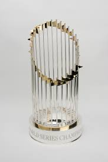

The Chicago White Sox are a team on the south side of Chicago, IL.
They won the world series in 2005 for the first time in almost a 100 years

Name
World Series Ring
American League MVP
Frank Thomas
1993
1994
Paul Kanarko
2005
Read more about the Chicago White Sox. This is their wikipedia page which is a good resource because it is checked and updated frequently. It also has links to learn more about the team and their history